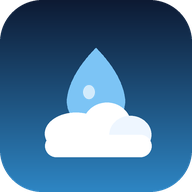

نفاف تطبيق مستقل تمامًا — لا يمثّل أي جهة حكومية أو رسمية ولا ينتمي إليها. وهو مشروع فردي غير تجاري يديره مطوّر واحد.
| البيانات | لماذا | إلزامي؟ |
|---|---|---|
| الموقع الجغرافي | عرض طقس منطقتك | لا — اختياري |
| البريد والاسم | حسابك إن سجّلت دخولك | لا — اختياري |
| الصور | رصداتك في المعرض | لا — اختياري |
| الملاحظات | رسائلك لنا | لا — اختياري |
يُستخدم لحظيًا فقط لجلب طقس منطقتك، ولا نحتفظ بسجل تاريخي لتحركاتك. يمكنك رفض الإذن تمامًا والبحث عن أي مدينة يدويًا — التطبيق يعمل كاملًا بدونه.
لا نشارك موقعك مع أي مستخدم آخر ولا مع أي جهة خارجية.
تسجيل الدخول بحساب جوجل اختياري بالكامل ويُستخدم فقط لميزة الرصد المجتمعي. إن لم تسجّل، تبقى كل الميزات الأساسية متاحة لك.
الصور التي ترسلها تُراجَع يدويًا قبل نشرها في المعرض. ولك أن تطلب حذف أي صورة في أي وقت. ولا تُستخدم صورك لأي غرض آخر.
اختيارية بالكامل. تُرسَل عبر خدمة الإشعارات القياسية في متصفحك، ويمكنك إيقافها من إعدادات التطبيق أو جهازك متى شئت.
لا أحد. لا نبيع بياناتك ولا نشاركها مع معلنين أو شركات تحليلات أو أي طرف ثالث لأغراض تجارية.
الاستثناء التقني الوحيد: خدمات الطقس والخرائط التي نجلب منها البيانات ترى عنوان IP الخاص بك كأي موقع تزوره — وهذا سلوك تقني معتاد للإنترنت لا نتحكم فيه. ولها سياساتها الخاصة:
على خوادم Cloudflare Workers المشفّرة. وكل اتصال بين التطبيق والخادم يمر عبر HTTPS مشفّر.
من داخل التطبيق: الإعدادات ⚙ ← بياناتي ← «حذف حسابي وكل بياناتي» — يُنفَّذ فورًا.
أو بالبريد: nafafweather@gmail.com
بعنوان «طلب حذف حساب» — خلال سبعة أيام عمل.
لمزيد من التفاصيل: صفحة حذف الحساب
نفاف غير موجّه للأطفال دون ١٨ عامًا ولا نجمع بيانات منهم عن قصد.
إن غيّرنا شيئًا جوهريًا سنُحدّث تاريخ هذه الصفحة ونُعلمك داخل التطبيق.
لأي سؤال أو شكوى: nafafweather@gmail.com